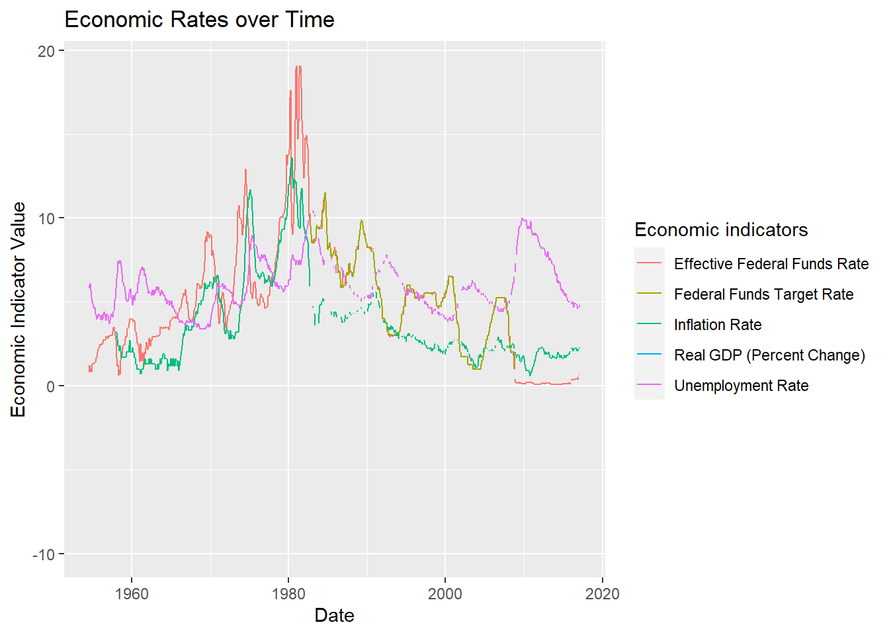

library(tidyverse)
library(ggplot2)
library(lubridate)
knitr::opts_chunk$set(echo = TRUE, warning=FALSE, message=FALSE)Homework3
Homework3
Homework3
Challenge Overview
The emphasis in this homework is on exploratory data analysis using both graphics and statistics. You should build on your prior homework - incorporating any feedback and adjusting the code and text as needed. These homeworks are intended to be cumulative. Therefore, while it is fine to switch datasets, you will need to include all of the information from HW1 for your new (or old) dataset in this hw submission as well.
Include descriptive statistics (e.g, mean, median, and standard deviation for numerical variables, and frequencies and/or mode for categorical variables Include relevant visualizations using ggplot2 to complement these descriptive statistics. Be sure to use faceting, coloring, and titles as needed. Each visualization should be accompanied by descriptive text that highlights: the variable(s) used what questions might be answered with the visualizations what conclusions you can draw Use group_by() and summarise() to compute descriptive stats and/or visualizations for any relevant groupings. For example, if you were interested in how average income varies by state, you might compute mean income for all states combined, and then compare this to the range and distribution of mean income for each individual state in the US. Identify limitations of your visualization, such as: What questions are left unanswered with your visualizations What about the visualizations may be unclear to a naive viewer How could you improve the visualizations for the final project
Read in data
FedFundsRate <- read_csv("_data/FedFundsRate.csv")head(FedFundsRate)# A tibble: 6 × 10
Year Month Day Federal Fu…¹ Feder…² Feder…³ Effec…⁴ Real …⁵ Unemp…⁶ Infla…⁷
<dbl> <dbl> <dbl> <dbl> <dbl> <dbl> <dbl> <dbl> <dbl> <dbl>
1 1954 7 1 NA NA NA 0.8 4.6 5.8 NA
2 1954 8 1 NA NA NA 1.22 NA 6 NA
3 1954 9 1 NA NA NA 1.06 NA 6.1 NA
4 1954 10 1 NA NA NA 0.85 8 5.7 NA
5 1954 11 1 NA NA NA 0.83 NA 5.3 NA
6 1954 12 1 NA NA NA 1.28 NA 5 NA
# … with abbreviated variable names ¹`Federal Funds Target Rate`,
# ²`Federal Funds Upper Target`, ³`Federal Funds Lower Target`,
# ⁴`Effective Federal Funds Rate`, ⁵`Real GDP (Percent Change)`,
# ⁶`Unemployment Rate`, ⁷`Inflation Rate`colnames(FedFundsRate) [1] "Year" "Month"
[3] "Day" "Federal Funds Target Rate"
[5] "Federal Funds Upper Target" "Federal Funds Lower Target"
[7] "Effective Federal Funds Rate" "Real GDP (Percent Change)"
[9] "Unemployment Rate" "Inflation Rate" library(funModeling)
plot_num(FedFundsRate)
sapply(FedFundsRate,function(x)sum(is.na(x))) Year Month
0 0
Day Federal Funds Target Rate
0 442
Federal Funds Upper Target Federal Funds Lower Target
801 801
Effective Federal Funds Rate Real GDP (Percent Change)
152 654
Unemployment Rate Inflation Rate
152 194 There are so many NA values in each of the columns, but we would maintain them as such as removing would lead to huge data loss.
sapply(FedFundsRate,function(x)sum(is.null(x))) Year Month
0 0
Day Federal Funds Target Rate
0 0
Federal Funds Upper Target Federal Funds Lower Target
0 0
Effective Federal Funds Rate Real GDP (Percent Change)
0 0
Unemployment Rate Inflation Rate
0 0 print(summarytools::dfSummary(FedFundsRate,
varnumbers = FALSE,
plain.ascii = FALSE,
style = "grid",
graph.magnif = 0.70,
valid.col = FALSE),
method = 'render',
table.classes = 'table-condensed')Data Frame Summary
FedFundsRate
Dimensions: 904 x 10Duplicates: 0
| Variable | Stats / Values | Freqs (% of Valid) | Graph | Missing | ||||
|---|---|---|---|---|---|---|---|---|
| Year [numeric] |
|
64 distinct values |  |
0 (0.0%) | ||||
| Month [numeric] |
|
12 distinct values |  |
0 (0.0%) | ||||
| Day [numeric] |
|
29 distinct values |  |
0 (0.0%) | ||||
| Federal Funds Target Rate [numeric] |
|
63 distinct values |  |
442 (48.9%) | ||||
| Federal Funds Upper Target [numeric] |
|
4 distinct values |  |
801 (88.6%) | ||||
| Federal Funds Lower Target [numeric] |
|
4 distinct values | |
801 (88.6%) | ||||
| Effective Federal Funds Rate [numeric] |
|
466 distinct values |  |
152 (16.8%) | ||||
| Real GDP (Percent Change) [numeric] |
|
113 distinct values |  |
654 (72.3%) | ||||
| Unemployment Rate [numeric] |
|
71 distinct values |  |
152 (16.8%) | ||||
| Inflation Rate [numeric] |
|
106 distinct values |  |
194 (21.5%) |
Generated by summarytools 1.0.1 (R version 4.2.1)
2022-12-21
FedFundsRate_mutate <- FedFundsRate%>%
mutate(Date = str_c(Day,Month,Year,sep="/"),Date = dmy(Date))
head(FedFundsRate_mutate)# A tibble: 6 × 11
Year Month Day Federal Fu…¹ Feder…² Feder…³ Effec…⁴ Real …⁵ Unemp…⁶ Infla…⁷
<dbl> <dbl> <dbl> <dbl> <dbl> <dbl> <dbl> <dbl> <dbl> <dbl>
1 1954 7 1 NA NA NA 0.8 4.6 5.8 NA
2 1954 8 1 NA NA NA 1.22 NA 6 NA
3 1954 9 1 NA NA NA 1.06 NA 6.1 NA
4 1954 10 1 NA NA NA 0.85 8 5.7 NA
5 1954 11 1 NA NA NA 0.83 NA 5.3 NA
6 1954 12 1 NA NA NA 1.28 NA 5 NA
# … with 1 more variable: Date <date>, and abbreviated variable names
# ¹`Federal Funds Target Rate`, ²`Federal Funds Upper Target`,
# ³`Federal Funds Lower Target`, ⁴`Effective Federal Funds Rate`,
# ⁵`Real GDP (Percent Change)`, ⁶`Unemployment Rate`, ⁷`Inflation Rate`FedFundsRate_mutate = subset(FedFundsRate_mutate,select = -c(Day,Month,Year))head(FedFundsRate_mutate)# A tibble: 6 × 8
Federal Funds Tar…¹ Feder…² Feder…³ Effec…⁴ Real …⁵ Unemp…⁶ Infla…⁷ Date
<dbl> <dbl> <dbl> <dbl> <dbl> <dbl> <dbl> <date>
1 NA NA NA 0.8 4.6 5.8 NA 1954-07-01
2 NA NA NA 1.22 NA 6 NA 1954-08-01
3 NA NA NA 1.06 NA 6.1 NA 1954-09-01
4 NA NA NA 0.85 8 5.7 NA 1954-10-01
5 NA NA NA 0.83 NA 5.3 NA 1954-11-01
6 NA NA NA 1.28 NA 5 NA 1954-12-01
# … with abbreviated variable names ¹`Federal Funds Target Rate`,
# ²`Federal Funds Upper Target`, ³`Federal Funds Lower Target`,
# ⁴`Effective Federal Funds Rate`, ⁵`Real GDP (Percent Change)`,
# ⁶`Unemployment Rate`, ⁷`Inflation Rate`FedFundsRate_mutate <- FedFundsRate_mutate %>%
pivot_longer(col = c (`Federal Funds Target Rate`, `Effective Federal Funds Rate`, `Real GDP (Percent Change)`, `Unemployment Rate`, `Inflation Rate`), names_to = "Economic indicators", values_to = "Economic Indicator Value")head(FedFundsRate_mutate)# A tibble: 6 × 5
`Federal Funds Upper Target` Federal Funds Lower …¹ Date Econo…² Econo…³
<dbl> <dbl> <date> <chr> <dbl>
1 NA NA 1954-07-01 Federa… NA
2 NA NA 1954-07-01 Effect… 0.8
3 NA NA 1954-07-01 Real G… 4.6
4 NA NA 1954-07-01 Unempl… 5.8
5 NA NA 1954-07-01 Inflat… NA
6 NA NA 1954-08-01 Federa… NA
# … with abbreviated variable names ¹`Federal Funds Lower Target`,
# ²`Economic indicators`, ³`Economic Indicator Value`ggplot(FedFundsRate_mutate, aes(`Date`, `Economic Indicator Value`, color = `Economic indicators`)) + geom_line(na.rm = TRUE) + labs(title = "Economic Rates over Time")
ggplot(FedFundsRate_mutate, aes(Date,`Economic Indicator Value`,color = "lightred")) +geom_point() +labs(title = "Economic Indicators across the Years")+facet_wrap(vars(`Economic indicators`))
ggplot(FedFundsRate_mutate, aes(`Date`, `Economic Indicator Value`, color = `Economic indicators` )) + geom_line(na.rm = TRUE) + labs(title = "Economic Rates over Time")+facet_wrap(vars(`Economic indicators`))
The new features built in homework3 are the pivot and mutate which is not added in homework 2, I used better plots for the pivots.